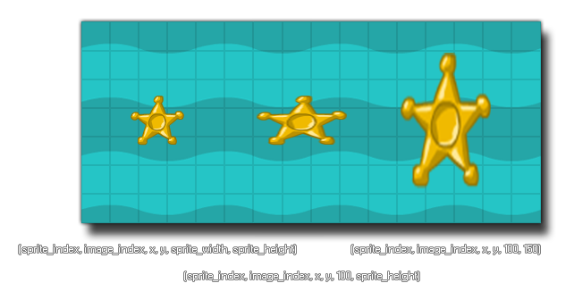

draw_sprite_stretched(sprite, subimg, x, y, w, h);
| Argument | Description |
|---|---|
| sprite | The index of the sprite to draw. |
| subimg | The subimg (frame) of the sprite to draw (image_index or -1 correlate to the current frame of animation in the object). |
| x | The x coordinate of where to draw the sprite. |
| y | The y coordinate of where to draw the sprite. |
| w | The width of the area the stretched sprite will occupy. |
| h | The height of the area the stretched sprite will occupy. |
Returns : N/A
This function simply takes a sprite resource and stretches it over the given width and height so that it occupies the area. As with draw_sprite you can
specify a sprite and a sub-image for drawing, then the x / y position in the room for the sprite to be drawn at and finally a width and a height (which must be pixel values). The image below illustrates
how this function works:

NOTE : When drawing with this function, the sprite x offset and
y offset are ignored and the sprite will be drawn with the top left corner at the specified x / y
position in the room.
draw_sprite_stretched(sprite_index, image_index, x, y, sprite_width / 2, sprite_height / 2);
This will draw the instances assigned sprite and its sub-image with the left corner at the instance x /y position. Its width is set to the same as the sprite, and the height is the sprite height divided by two.